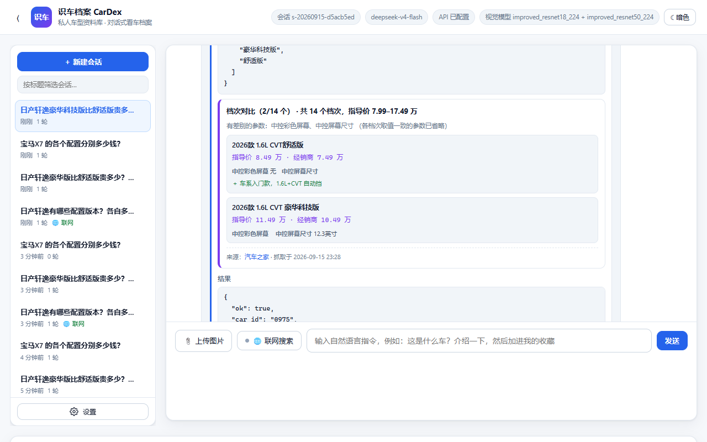

12 · 车型档次知识库（价格 / 参数 / 档次差异）
本文说明「档案库支持车辆各档次（标准版、豪华版……）的价格与参数，以及档次之间的差别」 和「搜索到的信息可以存进档案」这两件事是怎么做的。
核心难点只有一个：数据从哪来，以及怎么保证不是编的。
1. 为什么需要它
教师数据集只提供 类别 ID + 车型名。所以原始档案库里一款车只有：
品牌 · 车身大类 · 车身细分 · 一句话简介 · 看点标签 · 数据集样本量
没有价格、没有配置、更没有"舒适版比豪华版差在哪"。
而"看车"这件事，用户最关心的恰恰就是这些。于是本项目把档次信息做成一层 可以不断积累的知识：联网查到 → 存进档案库 → 以后直接查，不必再联网。
web_search 找报价/配置页
→ browse_page 打开（结构化抽取表格）
→ save_car_trims 存进档案库（必须带来源 URL）
→ query_car_info / compare_car_trims 直接回答
2. 数据模型
新增一个独立文件 agent/data/car_trims.json：
{
"schema": 1,
"cars": {
"0975": {
"car_id": "0975",
"car_name": "日产_轩逸",
"brand": "日产",
"body_group": "轿车",
"trims": [
{
"trim_id": "t-3f9a1c2b7e",
"name": "2026款 1.6L CVT 舒适版",
"year": "2026",
"guide_price_wan": 8.49, // 厂商指导价（万元）
"dealer_price_wan": 7.49, // 经销商参考价
"price_text": "7.49万起", // 页面原话，保留以防换算有争议
"specs": { // 有区分度的参数
"发动机": "1.6L 135马力 L4（HR16）",
"变速箱": "CVT无级变速",
"中控彩色屏幕": "有",
"中控屏幕尺寸": "8英寸"
},
"highlights": ["车系入门款，1.6L+CVT 自动挡"],
"source": {
"url": "https://car.autohome.com.cn/config/series/448.html",
"site": "汽车之家",
"fetched_at": "2026-09-15 23:28:41",
"verified": true // 这个 URL 真的在本会话用 browse_page 打开过
}
}
],
"sources": [ /* 去重后的来源列表，最多保留 12 条 */ ],
"notes": [ /* 伴随数据一起记下的补充说明 */ ],
"updated_at": "2026-09-15 23:28:41"
}
}
}
为什么和 car_profiles.json 分开：后者由 tools/build_car_profiles.py
从数据集重新生成，档次是运行时积累的知识，不能被重新生成覆盖掉。
3. 反编造：三道防线
价格是最容易被大模型顺手编一个的东西（而且编得还挺像）。这个项目的底线是 "查不到就说查不到"，所以：
| 防线 | 做法 | 效果 |
|---|---|---|
| ① 来源必填 | source_url 是必填参数，不合法直接 INVALID_ARGUMENTS |
没有来源的数据根本进不了库 |
| ② 来源核验 | 扫描本会话事件日志，检查该 URL 是否真的用 browse_page 打开过 |
模型不能凭空给个链接就说"我查到了"；没打开过的会标 verified: false |
| ③ 界面展示 | 每条数据带 source.site / fetched_at / verified，前端直接画出来 |
用户一眼看到数据出处与抓取时间，未核实的会显示黄色「未核实」标签 |
提示词里也把话说死了：
只写正文里真实出现过的字段。没读到排量就别填排量，没读到经销商价就留空 —— 宁可字段少，也不能有编的。
实测效果（问一款从没查过的车）：
宝马 X7 在咱们的车型库里（宝马 · 大型 SUV，ID 0222），但档案库里还没有它的档次和价格数据 ——教师数据集本来就不含价格，这块得联网去查。…… 训练数据里的车价早就过期了，我编一个数只会误导你。
4. 关键实现：结构化表格抽取
这是整条链路里最容易踩坑的一步，值得单独讲。
汽车之家的「参数配置」页是一张 241 行 × 15 列的大表：
行 = 参数项，列 = 各个档次。而且它被拆成了 28 张 <table>，
其中档次名单独占一张宽而扁的表。
踩过的三个坑
坑 1：用 innerText 读会拍平。
document.body.innerText 把表格按行展开成一列文本：
厂商指导价
基本参数
厂
级别
能源类型
…
列与档次的对应关系彻底丢失 —— 你知道有"12.3英寸"，但不知道是哪一档的。
坑 2：还会被长度限制截断。
该页 innerText 有 21,000 字，而 browse_page 默认只回 6,000（最大 12,000）。
被截掉的恰好是下半部分，也就是天窗、座椅、辅助驾驶这些真正有区分度的装备项。
坑 3：档次名的表头要单独找。
28 张表里挑"最宽的"，会选中「电池/充电」那张分节表 —— 它的首行只有第一格有字、
其余都是 -。真正的档次名表首行几乎每一格都填着配置名。
解法：browse_page(extract="tables")
新增结构化抽取模式，直接读 DOM 的表格结构：
// 挑「首行非空单元格最多」的宽表当列名行 —— 比按宽/高排序靠谱得多
const filled = (t) => (t.grid[0] || []).filter(c => c && c !== '-').length;
const header = wide.slice().sort((a, b) => filled(b) - filled(a))[0];
返回三部分：
table_header—— 列名行（各档次的名称），用它对齐后面的列；tables[].grid—— 各分表，行列结构完整保留；row_keywords—— 只保留行名匹配的行（240 行里真正有用的往往就几十行）。
实测效果：
[列名行] 2026款 1.6L CVT 舒适版 | 2026款 1.6L CVT 舒享版 | … | 2023款 超混电驱 超智驾Max
[表] 原 25 行 → 返回 6 行
中控彩色屏幕 | 触控液晶屏 | 触控液晶屏 | … | - | 触控液晶屏
中控屏幕尺寸 | 12.3英寸 | 12.3英寸 | … | - | 8英寸
中控屏幕分辨率 | 1920x720 | 1920x720 | … | - | -
同一次抽取还能拿到 辅助驾驶系统 = ProPILOT、辅助驾驶等级 = L2 这类
只在高配才有的装备 —— 这正是回答"贵在哪"的依据。
5. 两个新工具
save_car_trims —— 把搜到的信息存进档案
| 参数 | 说明 |
|---|---|
car_id_or_name |
车型 |
source_url |
必填，数据来源页面 |
source_site |
可选，站点名 |
trims[] |
档次数组：name / year / guide_price_wan / dealer_price_wan / price_text / specs / highlights |
replace |
默认 false 按名称合并；true 整体替换 |
note |
可选，随数据记下的补充说明 |
按名称合并意味着可以分批写、多次补：实测模型自己就分了 3 批 （2026款汽油 / 2023款超混电驱 / 2026款经典），合并成 14 个档次。
价格归一化：网页上格式五花八门，统一转成万元 ——
| 输入 | 输出 |
|---|---|
7.99 / 7.99万 / 6.39万起 |
7.99 / 7.99 / 6.39 |
¥79,900 / 79900元 / ￥139,900 |
7.99 / 7.99 / 13.99 |
12.5 万元 |
12.5 |
面议 / None / 0 |
None（宁可留空，也不猜） |
compare_car_trims —— 比出档次之间的差别
关键在于只列有差别的项。网页上那张表里大部分行是全系一致的 （"车身结构：4门5座三厢车"），全列出来没有信息量。
输入：12 个档次的 specs（每档 6~8 项）
输出：differing_specs = [中控彩色屏幕, 发动机, 变速箱, 最大功率,
最大扭矩, 能源类型, 中控屏幕尺寸,
辅助驾驶系统, 辅助驾驶等级] ← 9 项真正有差别的
identical_specs_count = 各档次完全一致的那些（已省略）
支持 trim_names 只比其中几个（如 ["舒适版","豪华版"]）。
还没有数据时不会瞎编，而是返回可执行的指引：
档案库里还没有 日产_轩逸 的档次数据。可以先用 web_search 找到该车型的报价/配置页， 再用 browse_page 打开读正文，最后用 save_car_trims 存进来。
6. 用户自己的看车档案也能记档次
注意区分两个库：
| 车型知识库 | 用户看车档案 | |
|---|---|---|
| 文件 | agent/data/car_trims.json |
agent/data/garage.db（SQLite） |
| 内容 | 客观数据：这款车有哪些档次、多少钱、差在哪 | 主观记录：用户看过/想买哪一款 |
| 写入工具 | save_car_trims（需要来源） |
add_car_record（记用户的话） |
| 谁能看 | 所有会话共享 | 按 session_id 隔离 |
add_car_record 新增了 trim 参数。用户说「我就要舒适版，记下来」时：
- 会去档次库里核对这个档次是否存在；
- 存在 → 带出指导价，
trim_matched+guide_price_wan； - 不存在 →
trim_unverified: true，并如实说明"档案库里还没有这款车的档次数据，未做核对"。
数据库用 ALTER TABLE 平滑迁移（MIGRATIONS 列表），老库不用重建。
7. 实测数据
用真实模型 + 真实浏览器跑一遍（tools/verify_trims.py，17 项全过）：
你 > 日产轩逸有哪些配置版本？各自多少钱？帮我上网查清楚，然后存进档案库里…
↳ query_car_info(轩逸) → 日产_轩逸｜日产｜轿车
↳ web_search ×3 → 找到汽车之家报价页/配置页
↳ browse_page(配置页, extract="tables",
row_keywords=["天窗","座椅","气囊","轮毂","倒车影像",…])
↳ browse_page(报价页)
↳ save_car_trims ×3（分 3 批） → 存入 14 个档次，已核验来源
助手 > 轩逸的配置和价格我查全了，已经存进档案库
（数据来源：汽车之家轩逸参数配置/报价页，2026-09 抓取，官方渠道为准）。
入库结果：
| 项目 | 数值 |
|---|---|
| 档次数量 | 14 个 |
| 价格跨度 | 指导价 7.99 – 17.49 万 |
| 带价格的档次 | 14 / 14 |
| 带参数配置的档次 | 14 / 14 |
| 带装备说明（highlights）的档次 | 9 / 14 |
| 能比出来的差异参数 | 9 项 |
| 来源核验 | ✅ verified: true（汽车之家配置页） |
几个档次的真实数据：
| 档次 | 指导价 | 经销商 | 该档特点 |
|---|---|---|---|
| 2026款 经典 1.6L CVT安心版 | 7.99 万 | 6.39 万 | 全系最便宜的自动挡 |
| 2026款 1.6L CVT舒适版 | 8.49 万 | 7.49 万 | 车系入门款，无中控屏 |
| 2026款 1.6L CVT舒享版 | 9.49 万 | 8.39 万 | 8英寸中控触控屏 |
| 2026款 1.6L CVT 科技版 | 10.49 万 | 9.49 万 | 中控屏升级到 12.3 英寸 |
| 2026款 1.6L CVT 旗舰版 | 11.99 万 | 10.99 万 | ProPILOT L2 辅助驾驶（汽油版独有） |
| 2023款 超混电驱 超豪华Ultra | 17.49 万 | 14.19 万 | 车系顶配 |
第二轮换个新会话（不联网）问"豪华科技版比舒适版贵多少" —— 直接从档案库回答：
差价 3.0 万元（指导价 8.49 → 11.49 万，终端参考价同样差 3 万）。 档案库里记到的配置差异只有两项：中控彩色屏幕（无 → 有）、中控屏幕尺寸（无 → 12.3 英寸）。 得说明一句：库里目前只沉淀了这两项区分性配置，像天窗、座椅材质、辅助驾驶、气囊数 这些能体现「贵在哪」的装备项还没抓全，所以我没法告诉你这 3 万还买到了什么。
最后这段"没抓全就说没抓全"正是我们要的：能力上多了一个数据源，诚实标准没有降。

8. 途中修掉的一个真 bug
第一次跑，第 1 轮直接失败，错误码 API_RESPONSE_INVALID：
输出被 max_tokens 截断
原因：模型想把整张配置表（10 个档次 × 几十项参数）一次性塞进一个
save_car_trims 调用，2048 个 token 根本不够。
三处修复：
max_tokens2048 → 4096，并新增max_tokens_ceiling = 8192；- 撞上截断自动补救：新增错误码
OUTPUT_TRUNCATED，客户端见到它会把max_tokens直接提到上限再试一次（而不是把这一轮判死、让用户重说一遍）； 界面会提示「输出被截断，已把 max_tokens 从 4096 提到 8192 重试」； - 引导分批写：工具描述与提示词都写明"一次 6~8 个档次，多了分几次调用"，
并强调
specs只填有区分度的项，别把整张参数表抄进来。
修复后模型自己就分成了 3 批（save_car_trims ×3），一次通过。
附带教训：第一版虽然存成功了，但只记了发动机/变速箱/驱动形式 ——
compare_car_trims比出来"所有档次参数完全一样"，等于白存。 于是在提示词里补了一句：真正决定档次差别的是配置装备（天窗、座椅、中控屏、 辅助驾驶），这些务必写进specs或highlights。改完之后差异参数从 0 变成 9 项。
9. 途中修掉的第二个坑：重复运行会累积出重复档次
知识库是越用越厚的，所以"同一档次被反复写进来"是个必须处理的问题。 实测两次抓取后出现了这样的近似重名：
2023款 超混电驱 全电驱大屏 ← 同一次抓取叫「全电驱大屏」
2023款 超混电驱 全电驱大屏版 ← 另一次叫「全电驱大屏版」
2023款 超混电驱 超Ultra ← 另一次叫「超豪华Ultra」
2023款 超混电驱 超豪华Ultra
16 条里有 2 条其实是重复的。按名称精确合并不住，于是加了模糊归并。
第一版模糊归并是错的（而且是我自己写错的）
第一版用 difflib.SequenceMatcher 相似度 ≥ 0.86 判定。跑清洗时：
清洗重复: 16 → 10 个档次 ← 直接丢了 6 个真档次！
根因：中文档次名恰恰只差一个字 —— 舒适版 / 舒享版 相似度 0.93，
科技版 / 舒享科技版 也很像。用字符相似度判别，等于按"长得像"合并，
把不同的档次错误地并成一个。
改对之后的判据：价格 > 缩写关系
按可靠性从高到低：
- 价格。名字会骗人，价格不会：
*
科技版 10.49万与舒享科技版 10.99万—— 名字像缩写关系，但价格不同就是两款车； *超Ultra 17.49万与超豪华Ultra 17.49万—— 同价，就是同一档次的两种写法。 - 缩写关系（删字，不是换字）：
*
全电驱大屏⊂全电驱大屏版（连续子串）→ 同一档； *超Ultra是超豪华Ultra的子序列（中间插了"豪华"）→ 同一档； *舒适版不是舒享版的子序列（"适"没出现在"舒享版"里）→ 不同档次。 - 括号注解要剥掉。模型偶尔会自己加说明：
2026款 1.6L CVT 科技（指导价11.49万款）—— 括号里是对同一档的解释， 不剥掉就永远合并不上（长度差太多，子串/子序列规则全失效）。 - 合并时保留哪个名字：不能只比长度（注解名更长，会被留下来），
要先排除带注解的，再在剩下的里选归一化后更长的（
超豪华Ultra>超Ultra）。 - 长度护栏：差别超过 6 个字不算缩写，避免「1.6L CVT」吞掉「1.6L CVT 豪华科技版」。
写进代码的原则：拿不准就不合并。 多一条重复记录只是有点烦，错误合并会真的丢数据。
11 个用例全过（含上面这些易混对），并且连跑两遍完整链路，档次数量稳定在 14，零重复。
还提供了
dedupe_car(cfg, car_id)做补账清理：归并规则是逐步收紧的， 早期存进去的数据可能带着按旧规则没合并的重复项，这个函数能洗一遍 （顺便把残留的括号注解从名字里去掉）。实测把 19 条洗成 18 条 —— 而少掉的那条正是重复项，其余 17 条里包含2024 / 2026 / 2023 三个年款的真档次， 它们是不同年款，本来就该并存。
10. 稳定性：两个只在反复跑时才暴露的问题
跑一遍过、跑四遍挂两遍 —— 这两个问题都是反复测试才逼出来的。
问题 A：预算用尽就交白卷
配置表任务很重（要开好几个页面、抓大表格），实测 12 轮预算偶尔不够用。
原来的行为是直接抛 MAX_ROUNDS_EXCEEDED，回复 0 字 ——
明明已经抓到一堆资料，却因为"轮数用完了"一个字都不给用户。
修复：预算用尽前先要一次「不带工具的最终回答」（loop.py）：
# 预算用尽：先要一次「不带工具的最终回答」，别直接判死
final_messages = [system] + session.public_messages() + [{
"role": "system",
"content": "<budget_exhausted>…不允许再调用任何工具，"
"请立刻基于已经拿到的工具结果给出最终回答。"
"信息不足的部分如实说明「这部分没查到」…绝对不要编造数据。</budget_exhausted>"
}]
resp = self.client.complete(final_messages, []) # ← 不给工具，逼它开口
只有连这一下也说不出话，才如实报错。这是"尽力而为"和"直接失败"的区别。
问题 B：来源核验过严，明明开了却说没开
verified 偶尔为 false —— 模型读的是
…/config/series/448.html?pvareaid=3311700，保存时写的是 …/config/series/448.html。
明明是同一个页面，却被判成"没打开过"。
修复：URL 归一化要比对得宽容，但不能放水：
去掉协议（http/https）→ 去掉 www. → 去掉 ?query / #fragment → 去掉结尾斜杠和 .html
然后：完全相同，或一个是另一个的前缀（页面带子路径）才算同一个页面。
同时在核验失败时，把本会话真正打开过的 URL 列表回给模型， 让它自己用正确的 URL 重调一次 —— 而不是让它带着一个"未核实"的标记继续。
修完之后连跑 4 遍，17/17 全过，不再有随机失败。
11. 最终数据
清理后的轩逸档次库：
| 档次数量 | 18 个（覆盖 2023 / 2024 / 2026 三个年款） |
| 价格跨度 | 指导价 7.99 – 17.49 万 |
| 带价格 | 18 / 18 |
| 带参数配置 | 18 / 18 |
| 带装备说明 | 14 / 18 |
| 可比出的差异参数 | 16 项 |
| 来源核验 | ✅ verified: true（汽车之家配置页） |
16 项差异参数里既有动力（排量 / 发动机 / 变速箱 / 最大功率 / 最大扭矩 / 能源类型）， 也有真正决定"贵在哪"的装备项：
中控屏 · 中控屏幕尺寸 · 中控彩色屏幕 · 辅助驾驶系统 · 辅助驾驶等级
巡航系统 · 胎压监测 · 车身结构 · 燃油标号 · 最大马力
各档次的装备说明示例（highlights）：
| 档次 | 指导价 | 该档多出来的 |
|---|---|---|
| 2026款 1.6L CVT 舒享版 | 9.49 万 | 8英寸触控液晶屏 |
| 2026款 1.6L CVT 科技版 | 10.49 万 | 12.3英寸触控液晶屏（1920x720） |
| 2026款 经典 1.6L CVT XE 舒心天窗版 | 11.86 万 | 天窗 |
| 2026款 1.6L CVT 旗舰版 | 11.99 万 | 12.3英寸触控屏 + ProPILOT 辅助驾驶（L2） |
| 2023款 超混电驱 全电驱Pro | 13.89 万 | e-POWER 汽油电驱系统 |
| 2023款 超混电驱 超智驾Max | 15.59 万 | ProPILOT 辅助驾驶（L2级）+ 12.3英寸中控屏 |
12. 怎么自己验证
python tools/verify_trims.py # 17 项：真实模型 + 真实浏览器跑完整链路，含反编造
python tools/verify_agent.py # 115 项：其中 28 项覆盖档次库（含价格归一化、来源核验）
单测某个工具：
import json, sys, threading
sys.path.insert(0, "."); sys.path.insert(0, "src")
from agent.config import load_config
from agent.loop import Agent
from agent.session import SessionStore
from agent.tools.registry import ToolContext
cfg = load_config(); ag = Agent(cfg, store=SessionStore(cfg))
s = ag.store.create(); s.set_web_search(True)
ctx = ToolContext(session_id=s.session_id, turn_id="t", call_id="c", config=cfg,
session=s, signal=threading.Event(), image_path=None)
r = ag.registry.execute("c", "compare_car_trims",
json.dumps({"car_id_or_name": "轩逸"}), ctx)
print(json.dumps(r.payload, ensure_ascii=False, indent=2)[:1500])
相关文档：11 · Web 界面与会话管理（联网搜索与浏览器抓取）· 05 · 脚本与命令手册 · 08 · 常见问题与排错